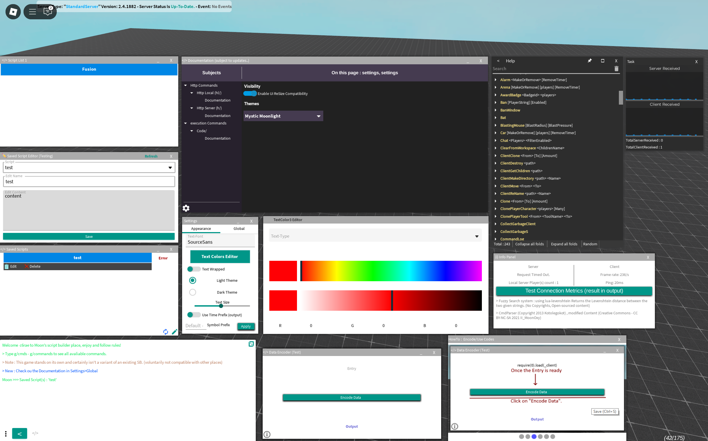
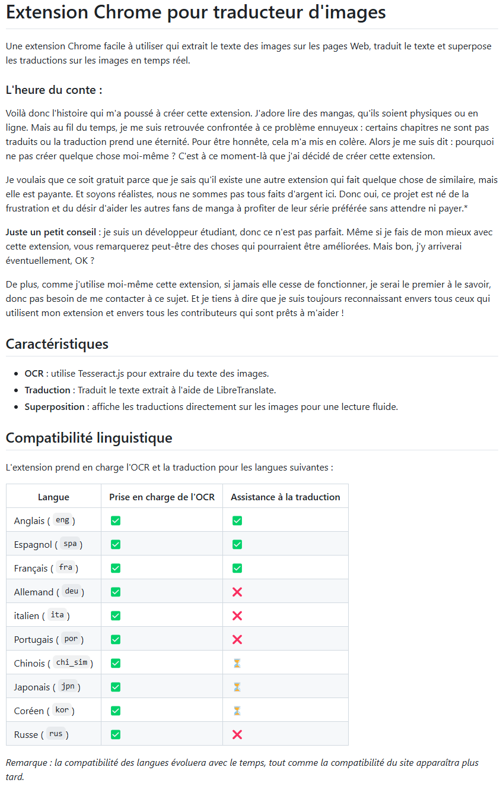

Architecture d'abord
Je priorise des frontieres claires, des contrats explicites et des composants maintenables avant de faire grossir les features.
PORTFOLIO 2026
Je suis Leo Peron, developpeur logiciel focalise sur la qualite produit, une approche securite-first et des interfaces pensees avec intention.
METHODE DE TRAVAIL
Je priorise des frontieres claires, des contrats explicites et des composants maintenables avant de faire grossir les features.
Le code defensif, l'hygiene de dependances et les pratiques de hardening sont integres des le depart.
Checks automatises, budgets de performance et tests de non-regression pilotent chaque livraison.
PROJETS SELECTIONNES

Game Tooling / Lua
Environnement d'execution de scripts en direct sur Roblox avec systeme de commandes, sandbox utilisateur et workflows d'ingestion de contenu externe.

Extension Navigateur
Extension Chrome qui extrait le texte depuis des images, le traduit et recompose le visuel pour accelerer la lecture de mangas et documents.
Frontend Engineering
Refonte complete centree sur une identite visuelle forte, l'accessibilite, la performance et une livraison statique securisee.
STACK D'INGENIERIE
Lua, Python, JavaScript, TypeScript, SQL, Java
Architecture frontend, composants reutilisables, gestion d'etat et boucle d'amelioration UX.
Strategie Git, code review, reflexes CI et durcissement progressif en production.
PARCOURS
Decouverte des ecosystemes de script builders et debut des experimentations sur des outils runtime.
Moon's Script Builder atteint environ un million de joueurs et valide des choix d'architecture a grande echelle.
Adaptation des decisions produit face a des contraintes de moderation plus strictes et a la gestion de risques.
Construction d'une vitrine plus forte avec des fondations frontend qualite et production-ready.
CONTACT
Telephone : 06 45 90 87 81
Discord : leoperon.